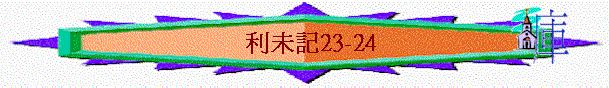

|
與神同住的人生──要聖潔(分別為聖歸於神) |
||||
|
人的奉獻--要蒙神悅納 |
人的生活--要分別出來 |
人的事奉--要尊神為聖 |
人的日子--要記念真神 |
人的產業--要歸神為聖 |
|
１－１０ |
１１－２０ |
２１－２２ |
２３－２４ |
２５－２７ |
四.人的日子----要記念真神(分別出來)（23-24）
＊內容:題及以色列人的七節期
『耶和華對摩西說:你曉諭以色列人說:耶和華的節期，你們要宣告為聖會的節期。』23:1-2
＊特點:多『世世代代永遠的定例』、『當這日』、『節期』字眼
＊究竟節期有甚麼意義？
1.分別出來的節期（23）
A.專心記念耶和華的日子
『．．．．耶和華的節期』23:1
＊要專心，甚麼工作都不可作，分別出來，為神聖，聖日，記念神自己
『你也要記念你在埃及地作過奴僕；耶和華你神用大能的手和伸出來的膀臂將你從那裡領出來。因此，耶和華你的神吩咐你守安息日。』申5:15
B.學習認識神作為的日子
＊要傳遞給日後的子孫，讓他們知道神在選民中的作為
a.安息日（v．3）
「六日要做工，第七日是聖安息日，當有聖會；你們什麼工都不可做。這是在你們一切的住處向耶和華守的安息日。」23:3
(1) 時間→第七日是聖安息日(現今的週五傍晚持續至週六傍晚)
（2）內容→甚麼工作都不可作，有聖會
（3）意義→神給人釋放與舒暢
→神創造天地
『因為六日之內，耶和華造天、地、海，和其中的萬物，第七日便安息，所以耶和華賜福與安息日，定為聖日。』出20:11
『你也要記念你在埃及地作過奴僕；耶和華你神用大能的手和伸出來的膀臂將你從那裡領出來。因此，耶和華你的神吩咐你守安息
日。』申5:15
（4）靈意→預表將來新天新地真正的安息及神起初的創造
『這樣看來，必另有一安息日的安息為神的子民存留。因為那進入安息的，乃是歇了自己的工，正如神歇了他的工一樣。』來4:9-10
b.逾越節（v．4-5）
「耶和華的節期，就是你們到了日期要宣告為聖會的，乃是這些。
（1）時間→尼散月（正月）十四日，又稱為亞筆月，約是現今的三至四月
（2）內容→在初十預備羊羔，在正日，將羊羔宰殺，血塗在門楣，門框
（3）意義→神拯救選民（越過被擊殺）
『你們的兒女問你們說:『行這禮是什麼意思？』你們就說:『這是獻給耶和華逾越節的祭。當以色列人在埃及的時候，他擊殺埃及人，越過以色列人的房屋，救了我們各家。』」於是百姓低頭下拜。』出12:26-27
（4）靈意→主的流血、受死，使我們越過神的刑罰
c.無酵節（v．4-8）
「耶和華的節期，就是你們到了日期要宣告為聖會的，乃是這些。」「
（1）時間→
（2）內容→將家中的酵除去，有聖會
（3）意義→神領選民出來
『你們要守無酵節，因為我正當這日把你們的軍隊從埃及地領出來。所以，你們要守這日，作為世世代代永遠的定例。』出12:17
（4）靈意→主領我們從罪中出來，除去我們的罪
『你們既是無酵的麵，應當把舊酵除淨，好使你們成為新團；因為我們逾越節的羔羊基督已經被殺獻祭了。所以，我們守這節不可用舊酵，也不可用惡毒（或作:陰毒）、邪惡的酵，只用誠實真正的無酵餅。』
林前5:7-8
d.初熟節（v．9-14）
「耶和華對摩西說：「你曉諭以色列人說：你們到了我賜給你們的地，收割莊稼的時候，要將初熟的莊稼一捆帶給祭司。他要把這一捆在耶和華面前搖一搖，使你們得蒙悅納。祭司要在安息日的次日把這捆搖一搖。搖這捆的日子，你們要把一歲、沒有殘疾的公綿羊羔獻給耶和華為燔祭。同獻的素祭，就是調油的細麵伊法十分之二，作為馨香的火祭，獻給耶和華。同獻的奠祭，要酒一欣四分之一。」23:9-13
（1）時間→
（2）內容→將初熟之物作搖祭（那時正是大麥初熟的日子）
→一歲沒殘疾公綿羊羔為燔祭
→細麵為素祭
→酒為奠祭
（3）意義→神給人有收成
『你曉諭以色列人說:你們到了我賜給你們的地，收割莊稼的時候，要將初熟的莊稼一捆帶給祭司。』23:10
（4）靈意→主的復活，為初熟的果子，引帶以後的收成（屬祂的人將來也復活）
『但基督已經從死裡復活，成為睡了之人初熟的果子。死既是因一人而來，死人復活也是因一人而來。在亞當裡眾人都死了；照樣，在基督裡眾人也都要復活。但各人是按著自己的次序復活:初熟的果子是基督；以後，在他來的時候，是那些屬基督的。』林前15:20-23
e.五旬節（v．15-22）
「你們要從安息日的次日，獻禾捆為搖祭的那日算起，要滿了七個安息日。到第七個安息日的次日，共計五十天，又要將新素祭獻給耶和華。要從你們的住處取出細麵伊法十分之二，加酵，烤成兩個搖祭的餅，當作初熟之物獻給耶和華。」23:15-17
（1）時間→初熟節後計起，七個安息日的次日，即五十日又稱為七七節，是選民收穫季節之末，在每年西彎月的六日---
（2）內容→慶祝收割的日子，將新素祭（2個有酵餅）作初
熟之物的搖祭（那時正是小麥初熟的日子）
→2隻公牛犢、7隻1歲公羊羔作燔祭(民28:27)
→7隻1歲沒殘疾羊羔，1隻公牛犢，2隻公綿羊為燔祭(加同獻的素祭和奠祭)
→1隻公山羊為贖罪祭
→2隻1歲公綿羊羔為平安祭
（3）意義→神給人豐富
（4）靈意→聖靈的降臨，給人屬靈的豐富與福氣
→有酵的餅可能指神也施恩給外邦人，兩個可能代表猶太人與外邦人也成為一
f.吹角節（v．23-25）
「耶和華對摩西說：「你曉諭以色列人說：
（1）時間→
（2）內容→要吹角作記念，當有聖會
（3）意義→神招聚選民
＊民10章記載選民在曠野行程中，神要他們制銀號招聚百姓起行
（4）靈意→主再來的日子，神招聚選民
g.贖罪日（v．26-32）
「
耶和華曉諭摩西說：「
（1）時間→7月10日
（2）內容→百姓刻苦己心，大祭司為全體贖罪
（3）意義→神赦免以色列人全家罪孽
（4）靈意→將來以色列人全家得救（羅11）
h.住棚節（v．33-44）
「你們收藏了地的出產，就從
（1）時間→
（2）內容→在各處山上取樹枝搭棚居住7日，要歡樂慶祝。
→將火祭、燔祭、素祭、祭物(應指平安祭)、奠祭獻給神
（3）意義→神在曠野的引導，眷顧
『你們要住在棚裡七日；凡以色列家的人都要住在棚裡，好叫你們世世代代知道，我領以色列人出埃及地的時候曾使他們住在棚裡。我是耶和華你們的神。』利23:42-43
（4）靈意→將來萬國也要朝見神，向神守節
『所有來攻擊耶路撒冷列國中剩下的人，必年年上來敬拜大君王萬軍之耶和華，並守住棚節。地上萬族中，凡不上耶路撒冷敬拜大君王萬軍之耶和華的，必無雨降在他們的地上。埃及族若不上來，雨也不降在他們的地上；凡不上來守住棚節的列國人，耶和華也必用這災攻擊他們。』亞14:16-18
C.享受神恩典的日子
『第一日當有聖會，什麼勞碌的工都不可做。』23:7
『第一日要拿美好樹上的果子和棕樹上的枝子，與茂密樹的枝條並河旁的柳枝，在耶和華你們的神面前歡樂七日。』23:40
D.擺上己供物的日子
『這是耶和華的節期，就是你們要宣告為聖會的節期；要將火祭、燔祭、素祭、祭物，並奠祭，各歸各日，獻給耶和華。這是在耶和華的安息日以外，又在你們的供物和所許的願，並甘心獻給耶和華的以外。』23:37-38
E.提醒怎生活的日子
a.記念奴婢
『但第七日是向耶和華你神當守的安息日。這一日，你和你的兒女、僕婢、牛、驢、牲畜，並在你城裡寄居的客旅，無論何工都不可做，使你的僕婢可以和你一樣安息。你也要記念你在埃及地作過奴僕；耶和華你神用大能的手和伸出來的膀臂將你從那裡領出來。因此，耶和華你的神吩咐你守安息日。』申5:14-15
b.分別歸神
『耶和華曉諭摩西說:以色列中凡頭生的，無論是人是牲畜，都是我的，要分別為聖歸我。摩西對百姓說:「你們要記念從埃及為奴之家出來的這日，因為耶和華用大能的手將你們從這地方領出來。有酵的餅都不可吃。』出13:1-3
c.記念窮人
『在你們的地收割莊稼，不可割盡田角，也不可拾取所遺落的；要留給窮人和寄居的。我是耶和華你們的神。』利23:22
2.節期以外的日子（24:1-9）
A.仍早晚的點燈
『耶和華曉諭摩西說:要吩咐以色列人，把那為點燈搗成的清橄欖油拿來給你，使燈常常點著。在會幕中法櫃的幔子外，亞倫從晚上到早晨必在耶和華面前經理這燈。這要作你們世世代代永遠的定例。』v．1-3
〜點燈的目的是要讓神的聖所有光，人從光中看到聖所的榮美
B.仍時常的擺上
『你要取細麵，烤成十二個餅，每餅用麵伊法十分之二。要把餅擺列兩行，每行六個，在耶和華面前精金的桌子上；又要把淨乳香放在每行餅上，作為紀念，就是作為火祭獻給耶和華。每安息日要常擺在耶和華面前；這為以色列人作永遠的約。』v．5-8
〜行可作「摞」(把東西重叠地往上放)，放陳設餅的目的是要常有供物獻給神，而餅是用細麵做的，加上乳香，可能表達人要記念神，人要每日將馨香的生活獻給神
3.值得鑑戒的片段（24:10-23）
〜之前題及人要在節期及平日常記念神，但有一個以色列婦人的兒子卻不記念神是不可侵犯的，，卻作了糊塗事
A.母親名字的註明
『有一個以色列婦人的兒子，他父親是埃及人，一日閒遊在以色列人中。這以色列婦人的兒子和一個以色列人在營裡爭鬥。這以色列婦人的兒子褻瀆了聖名，並且咒詛，就有人把他送到摩西那裡。（他母親名叫示羅密，是但支派底伯利的女兒。）』v．10-11
〜可能是說了一些不應該說的話，令神的名受損(應是咒詛神)
B.咒詛聖名的下場
『耶和華曉諭摩西說:把那咒詛聖名的人帶到營外。叫聽見的人都放手在他頭上；全會眾就要用石頭打死他。』v．13-14
〜可能他們犯的日子不是安息日，但人在平日中卻不尊重神，不記念神可石畏之聖名，也當受咒詛